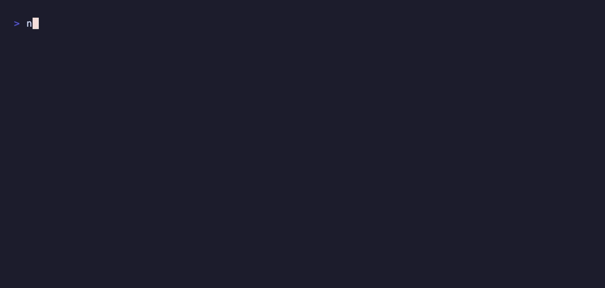
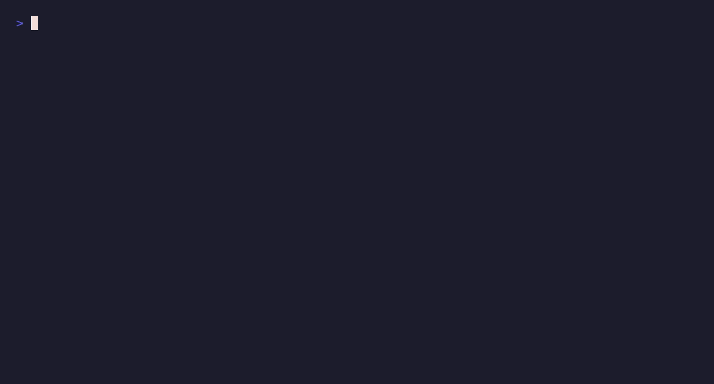

Plain English in. The exact command out.
nls turns what you mean into the right ffmpeg,
jq, grep, find, tar, git, curl or ImageMagick command.
You don't need to look up flags, and nothing is sent to a model.
Every command comes from a tested template.
This is the real nls, compiled to WebAssembly. It prints commands and never runs them.
It works in a pretend folder that holds users.json, data.json, package.json,
demo.mp4, hero.png, release-1.0.tgz and src/.
jq reads the fields of the JSON files, as it does on your machine.

Examples
Stop googling the same flags
This is real output from nls 0.1.0. Pick a tool.
$ nls ffmpeg "keep the first 10 seconds of talk.mp4 into intro.mp4" ffmpeg -i talk.mp4 -t 10 -c copy intro.mp4 $ nls ffmpeg "make a gif from demo.mp4 between 2 and 5 seconds" ffmpeg -ss 2 -to 5 -i demo.mp4 -vf 'fps=10,scale=480:-1:flags=lanczos,split[s0][s1];[s0]palettegen[p];[s1][p]paletteuse' -loop 0 demo.gif $ nls ffmpeg "extract audio from video.mp4 as mp3 at 320k" ffmpeg -i video.mp4 -vn -c:a libmp3lame -b:a 320k video.mp3
$ nls jq "in users.json how many users have emails" jq 'map(select(.email != null)) | length' users.json $ nls jq "get names from users.json where age > 30" jq 'map(select(.age > 30) | .name)' users.json $ nls jq "count users.json by .status" jq 'group_by(.status) | map({key: (.[0].status | tostring), count: length})' users.json
$ nls grep "which python files contain TODO, ignoring case" grep -rlEi --include='*.py' -e TODO . $ nls grep "list files not containing 'license' in src/" grep -rLE -e license src/ $ nls grep "find TODO or FIXME in the src folder" grep -rnE -e TODO -e FIXME src
$ nls find "files larger than 5MB ignoring node_modules" find . -path '*/node_modules' -prune -o -type f -size +5M -print $ nls find "log files older than 30 days" find . -type f -name '*.log' -mtime +30 $ nls find "delete all node_modules directories" find . -mindepth 1 -type d -name node_modules -prune -exec rm -rf {} + $ nls find "delete files" nls: refusing to delete everything; say which files (e.g. '*.log', named 'core', older than 30 days) (find_delete)
$ nls tar "back up src/ into backup.tgz excluding .git and node_modules" tar --exclude='.git' --exclude='node_modules' -czvf backup.tgz src/ $ nls tar "extract release-1.0.tgz into dist/ without the top-level folder" tar -xzvf release-1.0.tgz -C dist/ --strip-components=1 $ nls tar "compress src/ into backup.tar.gz with xz" nls: 'backup.tar.gz' is a gzip archive, but xz was asked for (tar_create)
$ nls git "undo last 2 commits keep changes staged" git reset --soft HEAD~2 $ nls git "find commit that added 'def retry'" git log -S 'def retry' --oneline $ nls git "commits on feature-login not on main" git log --oneline main..feature-login $ nls git "who changed lines 3 to 4 of src/server.py" git blame -L 3,4 src/server.py $ nls git "restore deleted file src/old.c" git checkout "$(git rev-list -n 1 HEAD -- src/old.c)^" -- src/old.c
$ nls curl "post data.json to https://api.example.com/users" curl -sS -X POST -H 'Content-Type: application/json' -d @data.json 'https://api.example.com/users' $ nls -x -y curl "check response status of https://example.com" → curl -sSIL -o /dev/null -w '%{http_code}\n' 'https://example.com' 200 $ nls curl 'delete https://api.example.com/users/42 with token $TOKEN' curl -sS -X DELETE -H "Authorization: Bearer $TOKEN" 'https://api.example.com/users/42' $ nls curl "download https://example.com/file.zip as out.zip" curl -fL 'https://example.com/file.zip' -o out.zip $ nls curl "get data.json to https://api.example.com/users" nls: this request doesn't send a body ('data.json'); did you mean post, put or patch? (curl_get)
$ nls -x -y magick "resize hero.png to width 800 convert to webp quality 85" → magick hero.png -resize 800x -quality 85 hero.webp $ nls -x -y magick "what are the dimensions of hero.webp" → magick identify -format '%wx%h\n' hero.webp 800x450 $ nls magick "make sprite.png transparent background" magick sprite.png -fuzz 5% -transparent white sprite_transparent.png $ nls magick "shrink hero.png to 1920x1080 only if larger" magick hero.png -resize '1920x1080>' hero_resized.png $ nls magick "make a gif from frames/*.png at 12 fps" magick -delay 8 -loop 0 'frames/*.png' animation.gif $ nls magick "make sprite.png transparent as sprite.jpg" nls: jpg can't store transparency; use png or webp (magick_transparent)
It picks -c copy when it can, so trimming a clip doesn't re-encode it.
In your shell
You don't have to name the tool
Leave the tool out and nls picks the one that fits: nls "convert demo.mov to gif" gives an ffmpeg command.
Tab completes flags and tool names in bash and zsh. With eval "$(nls --shell zsh)" in your rc file,
you can type a request on the command line and press Ctrl+G. The request is replaced by the command, ready to read and edit before you run it.

Why no LLM
It does fewer things, but it gets them right
AI command generators can handle anything, but they need a network, take seconds, and sometimes invent flags.
nls covers eight tools and treats each one carefully. Here are ten requests that are easy to get wrong.
The left pane is the real nls, the same WebAssembly build as the playground above, timed in your browser.
The right pane is a simulation, not a recording of any product: its answers are mistakes LLM command
generators are known to make, and its waits are a typical 1–4 s round trip to a hosted model.
These ten prompts were picked because they're easy to get wrong; on everyday requests LLM helpers do much better.
Every nls command here passes shellcheck.
Instant
That includes starting the process. You won't wait on a spinner.
Private
Your file names and data never leave your machine. It needs no API key and works on a plane.
Deterministic
The same input always gives the same output, so you can script it and trust it.
Tested for real
The tests run the generated commands against real ffmpeg, jq, grep, find, tar, git, curl and ImageMagick, and check the output files: durations with ffprobe, image sizes, transparency and pixel colours with magick.
| nls | LLM-based CLI helpers | |
|---|---|---|
| Network / API key | None | Usually required |
| Same input, same output | Always | Not guaranteed |
| Latency | ~2 ms | Typically seconds |
| Your files and data | Stay on your machine | Sent to a provider, unless self-hosted |
| Invented flags | Not possible: every command is a tested template | Possible |
| Coverage | ffmpeg, jq, grep, find, tar, git, curl, ImageMagick (208 templates) | Anything |
How it works
A small compiler from English to shell
There are no models or weights, just about 8,100 lines of C11 using the standard library and no other dependencies.
Lexer
It pulls typed values out of your sentence: files, timestamps, resolutions, sizes, ages, JSON paths, archives, branches, revisions and URLs. 10 seconds becomes TIME 10, and width 640 becomes RES 640:-2.
Matcher
It scores the tool's templates by keyword overlap. For jq it peeks at your file's field names, so "emails" becomes .email. If a template needs a value you didn't give, nls tells you instead of guessing.
Expander
It fills in the winning template with safe POSIX quoting. Strings go through --arg or -e and are never spliced into code.
Safety
It would rather refuse than guess
Cleanup commands are where generated shell hurts most, so nls is strict by default. Before a destructive command runs, it shows you what would go.
$ nls -x find "delete .DS_Store files recursively" → find . -type f -name .DS_Store -delete nls: destructive: deletes the matching files for good nls: dry run: find . -type f -name .DS_Store -print ./.DS_Store ./src/.DS_Store [type y to run / Enter to abort] y $ nls -x -y git "delete untracked and ignored files" → git clean -fdx nls: destructive: deletes untracked and ignored files for good (build output, but also local files such as .env) nls: dry run: git clean -ndx Would remove .env Would remove build/ Would remove notes.txt nls: not running a destructive command without confirmation (-y ignored; add --force to skip it) [type y to run / Enter to abort] nls: aborted
- Prints only. Nothing runs unless you pass
-x, and-xasks before it runs. - Dry run first. Deletes, hard resets, cleans and force pushes say what they destroy. Where the tool allows it, a dry run such as
find … -printorgit clean -nshows what they would touch, and if it fails, nothing runs. - A typed y, not Enter. For a destructive command, Enter aborts and only
yruns it, so a reflex can't delete anything. -yisn't enough.-yskips the question for everyday commands. Destructive ones also need--force, and when the match was a guess, nothing skips the question.- No unfiltered deletes.
delete fileson its own is refused. Directory deletes use-mindepth 1, so the search root is never removed. - No silent drops. If a template can't express part of your request, such as "older than 30 days",
nlsrefuses rather than run a broader delete. - Quoted everywhere. File names and strings are single-quoted, and JSON paths are checked against a strict character set.
- No flag injection. grep patterns go through
-e, so searching for-vcan't turn into an option. - Safe by default in git. Ties go to the safe variant: "undo last commit" is
reset --soft, "delete branch" is-d, and--hardonly appears when you say "throw away" or "discard". - Secrets stay secret in curl. URLs must pass a strict allowlist and are always quoted, and
token $TOKENbecomes-H "Authorization: Bearer $TOKEN", so the token never lands in the command or your shell history. - Images are never overwritten. Single-image commands write a new file, folder batches either change only the format or write into another folder, and names magick would read as something else (
@list.txt,png:x, a leading-) are refused. - Avoids the classic traps. It writes
-Linstead of-lv, ends-prune -owith-print, and never combines-deletewith-prune.
Install
Ready in about ten seconds
You need a C compiler and make. It installs to ~/.local/bin without sudo.
$ git clone https://github.com/gnatal/nls.git $ cd nls && make && make install # then $ nls --list # every template, with example prompts $ nls -x grep "find TODO in src" # run it (asks first) $ nls git "undo last commit" # git reset --soft HEAD~1 $ nls curl "is https://example.com up" # prints the status code $ nls magick "hero.png to webp" # magick hero.png hero.webp
What it doesn't do (yet)
- It only knows ffmpeg, jq, grep, find, tar, git, curl and ImageMagick so far, and git, curl and magick mean common workflows, not every flag.
- It supports POSIX shells only; quoting isn't Windows-safe.
- grep can't exclude directories yet.
- It's tested on macOS with BSD grep, find and tar, git 2.55, curl 8.7 and ImageMagick 7.1. The flags it uses also exist in GNU; git needs 2.23+ for
switch/restore, and image commands need ImageMagick 7 (magick).
Help shape it
Which commands do you look up most often? Open an issue and they could become the next templates. openssl is next on the list.